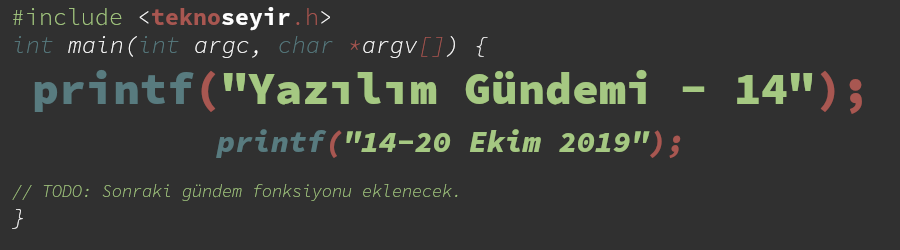
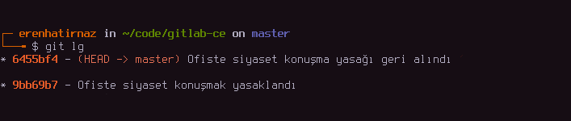
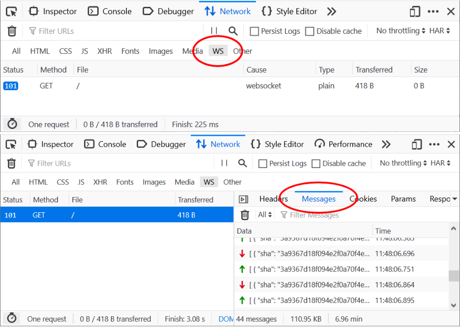
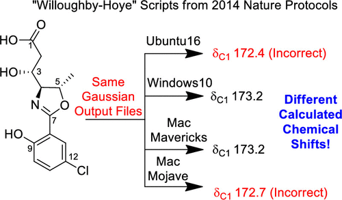

Yazılım Gündemi - 14
14-20 Ekim 2019
İçindekiler
- 1. GitLab ofiste siyaset konuşmayı yasakladı ve geri aldı
- 2. Python 3.8 stabil sürümü yayınlandı
- 3. Microsoft, .NET Framework API'lerinin .NET Core'a aktarılmasının tamamlandığını duyurdu
- 4. Firefox geliştirici araçlarına yeni özellik eklendi: WebSocket Inspector
- 5. Android 10 sürümünde kaldırılan bir fonksiyonellik bir uygulamanın hayatına son verdi
- 6. WireGuard uygulaması içerdiği bağış bağlantısı yüzünden Play Store'dan silindi
- 7. Bir programlama hatası 150'den fazla bilimsel çalışmayı etkiledi
- 8. Yaklaşan Etkinlikler
- 9. Diğer Haberler
- 10. Lisans

< Önceki Gündem | 14-20 Ekim 2019 | Sonraki Gündem >
1 GitLab ofiste siyaset konuşmayı yasakladı ve geri aldı

Geçtiğimiz haftalarda bir yazılımcının ABD Göçmenlik ve Gümrük Muhafaza kurumunu protesto etmesinden (bkz: Yazılım Gündemi - 10) ve aynı kurum ile iş anlaşması yapmış GitHub'daki geliştiricilerin tepkilerinden (bkz: Yazılım Gündemi - 13) bahsetmiştim. Tam da o zamanlara denk gelecek şekilde GitLab'de "bu olaylar bizi de etkileyebilir" demiş olacak ki, CEO Sid Sijbrandij tarafından şirketin el kitabına apar topar bu ekleme yapılmış. Kısaca yapılan ekleme şu şekilde: "müşterilerimizin değerleri ile bizim değerlerimiz uyuşmayabilir", "biz iş yerinde siyaset konuşmayız, verimlilik bizim bir numaralı değerimizdir".
Tabii ki bu eklemeyi yaparak olası protestoların önüne geçmeyi amaçlayan şirket yönetimi amacına ulaşamadığı gibi tam tersi bir etki de yaratıp insanların bu konu hakkında konuşmaya başlamasına yol açtı. Her ne kadar şirketin el kitabındaki bu değişiklik 2 hafta önce CEO tarafından pull request olarak açık şekilde yapılmış olsa da, olay bu hafta ortaya çıktı ve tartışmalar da bu hafta başladı. Hem şirketin kendi çalışanları hem de geliştirici camiasındaki birçok insan reddit ve HackerNews gibi platformlarda tepkilerini gösterdiler.
Şirketin bu yanlıştan dönmesi uzun sürmedi. Büyüyen tartışmalar üzerine ertesi gün şirketten yetkili başka isimler tarafından sorunlu cümleler değiştirildi ve çalışanların iş yerinde siyaset konuşmasına yönelik yasak da kalkmış oldu. GitLab yönetiminin bu tavırları her ne kadar doğru olmasa da şirketteki tamamen herkese açık yapı takdir edilmesi gereken bir şey. Şirketin birçok dokümanı herkese açık şekilde depolarında duruyor, çalışanlar de bunların değiştirilmesinde ve geliştirilmesinde katkı verebiliyorlar. GitLab'ın bu şekilde açık bir organizasyon yapısına olması sahip olmasını hep takdir etmişimdir.
Bu konuda siz ne düşünüyorsunuz. Sizce GitLab yönetiminin bu şekilde protestoların önüne geçmeye çalışması doğru mu? Yoksa çeşitli devlet kurumlarıyla iş anlaşması yapan şirketleri protesto edenler sorunu yanlış yerde mi arıyorlar? Yorumlar kısmında konuşalım.
2 Python 3.8 stabil sürümü yayınlandı
Python takımı, plan dokümanında belirttikleri şekilde (hatta daha erken bir tarihte) Python 3.8.0 final sürümünün stabil halini yayınladılar. Yazılım Gündemi - 2 yazısında Python 3.8 ile gelecek özelliklerden bazılarını anlatmıştım. Bu yazıda onlara değinmeyeceğim fakat başka iki özelliğe birlikte göz atalım:
2.1 PEP 589 - TypedDict
Diğer programlama dillerinde key-value object olarak bildiğimiz yapının Python'daki karşılığı Dictionary. Fakat Python'daki bu yapı tiplendirilmiş şekilde kullanılamıyordu. Örnek vererek daha iyi açıklayabilirim sanırım.
Önceden bu şekilde kullanıyorduk:
kisi = {'isim': 'Eren', 'soyisim': 'Hatırnaz', 'yas': 24}
Artık bu şekilde kendi sınıfımızı oluşturup onu da Dictionary nesnesi gibi kullanabileceğiz:
from typing import TypedDict class Kisi(TypedDict): isim: str soyisim: str yas: int kisi1: Kisi = {'isim': 'Eren', 'soyisim': 'Hatırnaz', 'yas': 24}
Yani artık tip kontrollü şekilde dictionary nesneleri kullanabileceğiz. Pek sık Python yazmasam da ara ara benim de ihtiyacım olan bir özellikti, gelmesine sevindim. Daha detaylı bilgi için alt başlığa eklediğim bağlantıdaki dokümana göz atabilirsiniz.
2.2 final niteleyicisi (PEP 586 - Literal Types)
Daha önce Java'da görmeye alıştığımız final niteleyicisi artık Python'a da
geliyor. Bilmeyenler için final niteleyicisi, tanımladığınız bir sınıfın,
fonksiyonun ya da değişkenin değiştirilmesi istemediğimiz durumlarda
kullandığımız bir ifade. Python da ise şu şekilde kullanabileceğiz:
from typing import final @final class Kisi: @final def merhaba(self): # ..
Değişkenleri ise bu şekilde değiştirilemez yapabileceğiz:
ID: Final = 15
Daha detaylı bilgi ve diğer değişiklikler ve yeniliklerle ilgili şeyler için konu başlığına eklediğim bağlantıya tıklayabilirsiniz.
3 Microsoft, .NET Framework API'lerinin .NET Core'a aktarılmasının tamamlandığını duyurdu
.NET Framework, Microsoft'un çok uzun zamandır geliştirmeye devam ettiği ve tüm ekosistemini altında topladığı bir uygulama çatısıydı. Windows uygulamalarından, mobil uygulamalara, oradan web uygulama ve servislerine kadar her şey bu framework sisteminin içerisinde fakat artık Microsoft bu emektar sistemi tozlu raflara kaldırmaya hazırlanıyor gibi. Çünkü artık .NET Framework yalnız değil. Geçtiğimiz yıllarda gelen CEO Satya Nadella ile açık kaynak dünyasına giriş yapan Microsoft, artık daha dışarıya açık bir yapıya sahip. Bu değişimin ürünlerinden biri olan .NET Core projesi de .NET Framework sisteminin yerini almaya hazırlanıyor. .NET Framework içerisindeki API'lerin de .NET Core projesine yavaşça aktarıldığını biliyoruz. Hatta geçtiğimiz haftalarda .NET Core 3.0 duyurulmuştu ve bu sürümle artık Windows Forms ve WPF desteğinin de geldiğini söylemiştik (bkz: Yazılım Gündemi - 11).
Bu hafta da öğreniyoruz ki .NET Framework API'lerinin .NET Core projesine aktarılması tamamlanmış. Yani artık .NET Framework'den hiçbir API, Core projesine aktarılmayacak. .NET Core projesinin, %80 civarında .NET Framework API'si içerdiğini söylüyor Microsoft. Dolayısıyla artık .NET Framework'de kullandığınız bazı API'ler .NET Core'da yoksa, hiç olmayacak demektir.
Microsoft zaten .NET'in geleceğinin Core projesi olduğunu bu blog yazısında açıklamıştı. Dolayısıyla çok da sürpriz olmadı bu gelişme. Aramızdan ayrılan teknolojiler arasında Web Forms, WCF Server ve Windows Workflow var. Kendilerini tozlu raflardaki yerlerine alabiliriz. .NET Framework'e destek hemen kesilmeyecek tabii ki de fakat benim tavsiyem uygulamalarınızı artık .NET Core altyapısına geçirmeye başlayın.
4 Firefox geliştirici araçlarına yeni özellik eklendi: WebSocket Inspector
WebSocket, sunucu ve istemci arasında kalıcı bir bağlantı kurmaya yarayan bir teknoloji. Daha çok tarayıcı üzerinde çalışan anlık mesajlaşma uygulamalarında kullanıyoruz. Firefox takımı da, gelen istekler üzerine yeni bir geliştirici aracı hazırlamış ve Firefox 71 sürümünde bu aracın yer alacağını açıklamış. Ayrıca şu an Firefox Developer Edition sürümünde bu özellik kullanılabilir durumda. Kullanmak için F12'ye basıp DevTools penceresini açtıktan sonra, Network sekmesine tıklayıp ve oradan da Messages sekmesine tıklamak gerekiyor.

Bu WebSocket Inspector aracı ile artık sunucu ile istemci arasındaki bu veri trafiğini izleyebilir, filtreleyebilir ve arama yapabilir hale geleceğiz. Bu sayede de WebSocket kullanan bir uygulama geliştirirken yaşadığımız araç sıkıntısını da çözmüş oluyor İlerleyen sürümlerde bu yeni araca yeni özellikler de eklenecekmiş. Mozilla ve Firefox takımı yine bizim için çalışmaya devam ediyor. <3 Mozilla <3 Firefox.
5 Android 10 sürümünde kaldırılan bir fonksiyonellik bir uygulamanın hayatına son verdi
Google, Android 10 sürümünde exec() isimli fonksiyonun uygulamaların
bulunduğu dizinde çalışması engellendiği için Servers for Android isimli
uygulamanın da geliştirilmesine son verilmiş. Uygulamanın BitBucket'daki
sayfası yayından kalmış fakat tahminime göre Android üzerinde web sunucu
çalıştırmaya yarayan bir uygulamaya benziyor. exec() fonksiyonu da büyük
ihtimal bir binary dosyasını çalıştırmaya yarayan bir komut (Android
geliştirici arkadaşlar yanlış biliyorsam düzeltsin beni). Bu uygulama da bu
yöntemle web sunucu için gerekli çeşitli araçları çalıştırıyormuş sanırım.
Yazıda bahsettiğine göre PHP bunlardan birisi mesela. Bu fonksiyonellik Android
10 sürümünde tamamen engellenmiş değil, eğer ilgili binary dosyaları APK
dosyasının içine paketlenmişse çalıştırılabiliyor fakat bu uygulama için bir
çözüm değil çünkü birden çok aracı ve farklı sürümlerini içermesi gerektiği
için uygulamanın boyutu 2GB'ı aşıyor ve haliyle mantıklı olmaktan da çıkıyor.
Maalesef geliştirici arkadaş uygulamayı geliştirmeyi durdurmuş ve Play
Store'dan da silmiş ama keşke BitBucket'daki kaynak kodlar dursaydı.
Maalesef geliştiricilik hayatımız boyunca böyle bir çok projemiz üzerinde
çalıştığımız platformun desteği kesmesi üzerine son bulacak. Burada Google'ın
haklılık payı var. exec() fonksiyonunu güvenlik sorunlarına yol açabileceği
kaygısıyla kaldırmaya hazırlanıyorlarmış.
6 WireGuard uygulaması içerdiği bağış bağlantısı yüzünden Play Store'dan silindi
Bir VPN protokolü olan WireGuard'ın Android uygulaması bu hafta bir süreliğine Play Store'dan silindi ve geri geldi. Uygulamalarına kullanıcıların destek olabilmeleri için bağış bağlantısı eklemişler ve uygulamayı Google'a inceleme için göndermişler fakat onay beklerlerken tam tersi red edilmişler hatta uygulama Play Store üzerinden silinmiş. Meğerse böyle bir ekleme Google'ın "Ödeme Yönergesi"ne uygun değilmiş. Neyse ki geliştirici hızlı davranmış ve ilgili değişikliği geri alıp tekrar incelemeye göndermiş ve uygulama kısa süre içerisinde tekrar Play Store'daki yerini almış.
Bu haber, Android geliştirici arkadaşların kulağına küpe olsun. Google'ın sistemi dışında kullanıcılarınızdan destek almak istersiniz falan aman ha! Kapı dışarı ederler adamı valla!
7 Bir programlama hatası 150'den fazla bilimsel çalışmayı etkiledi
Kimyasal analizde sıkça kullanılan "Willoughby-Hoye" isimli bir Python betiğinin farklı işletim sistemlerinde farklı sonuçlar vermesi yüzünden 150'den fazla bilimsel çalışma yanlış sonuç üretmiş olabilir.

Şekil 4: Betik Ubuntu 16 ve MacOS Majove sistemlerinde yanlış sonuç veriyor.
Hataya neden olan Python'daki glob isimli modül. Bu modül, belirli
bir şablona uygun dosya isimlerini getiren bir araç fakat bu modülün
çalışması işletim sisteminin dosyaları sıralama sistemine
bağımlıymış. Yani belirli bir şablona uygun dosya isimleri,
Ubuntu'da farklı sırayla, Windows'da farklı sırayla geliyor. Bu
habere konu olan Python betiğinde ise, glob fonksiyonundan gelen
dosyalar sırasıyla işleniyormuş fakat farklı sistemlerde dosyaların
da sırası değiştiği için betiğin ürettiği sonuçta buna göre
değişiyormuş. Böyle küçük bir detayı bile bulup, ortaya çıkarabilen
bilime hayranlığım sonsuz.
8 Yaklaşan Etkinlikler
| Etkinlik İsmi | Yer | Tarihi |
|---|---|---|
| Android Workshop | İstanbul | 22 Ekim 18:30 |
| Codefiction Buluşuyor | İstanbul | 22 Ekim 18:30 |
| Writing Modular, Scalable and Maintainable CSS | İzmir | 23 Ekim 19:00 |
| Yapay Zekaya Giriş Semineri | İstanbul | 24 Ekim 13:30 |
| AWS API Gateway | İstanbul | 24 Ekim 17:00 |
| Modern Antivirus Atlatma Teknikleri Workshop | Ankara | 24 Ekim 19:00 |
9 Diğer Haberler
go-yamlprojesinde DoS açığı bulundu ve giderildi.- .NET Core 3.1 Preview 1 sürümü duyuruldu.
- Visual Studio 2019 v16.4 Preview 2 yayınlandı.
- Amazon Web Services, Rust projesine sponsor oldu.
- Amazon, kendi hizmetlerindeki Oracle veritabanlarını kendi çözümleri ile değiştirdi.
- Microsoft'un, dağıtık uygulamalar için runtime projesi Dapr ilk sürümü 0.1.0'ı duyurdu.
- Microsoft, veri görselleştirme aracı SandDance'ı açık kaynak yaptı, GitHub Deposu.
- Google Açık Kaynak Takımı, Bazel isimli build sistemlerinin ilk stabil sürümü 1.0'ı genel erişilebilirlik duruma getirdi.
- GitHub, Game Off isimli oyun yarışması düzenliyor.
- Android Emulator 29.2.5 Canary sürümü yayınlandı.
- CloudFlare deneysel olarak HTTP/3 desteği veriyor.
- RedHat, OpenShift 4.2 için yeni geliştirici araçlarını yayınladı.
- Slack, libslack isimli C++ kütüphanesini geliştirmeyi durdurduğunu açıkladı.
- EmacsConf içeriği belli oldu.
- Go programlama dilinin 1.13.3 ve 1.12.12 sürümleri yayınlandı.
- D programlama dilinin geleceği hakkında bir blog yazısı yayınlandı.
- Swift programlama dilinin yeni diagnostic mimarisi ile ilgili yazı yayınlandı.
- Vue-cli, v4.0.0 sürümü yayınlandı.
- RustUp, 1.20.0 sürümü duyuruldu.
- Go ile yazılmış client-driven REST-API sunucusu vulcain, ilk sürümü 0.1.0'ı yayınladı.
- TinyGo 0.9.0 sürümü çıktı.
- Birden çok geliştirici aracını bir arada barındıran reugn/dev-tools uygulamasını 0.2.0 sürümü çıktı.
- uvw (C++ için libuv) 2.2.0 sürümü çıktı.
- watt 0.1.0 sürümü çıktı.
- fancy-regex kütüphanesinin 0.2.0 sürümü çıktı.
10 Lisans

Yazılım Gündemi - 14 yazısı Eren Hatırnaz tarafından Creative Commons Atıf-GayriTicari-AynıLisanslaPaylaş 4.0 Uluslararası Lisansı (CC BY-NC-SA 4.0) ile lisanslanmıştır.